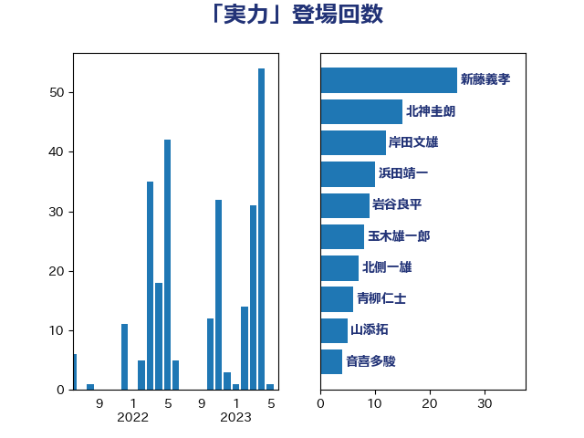

単語「実力」

| 新藤義孝 | 自由民主党 | 25 回 |
| 北神圭朗 | 無所属 | 15 回 |
| 岸田文雄 | 自由民主党 | 12 回 |
| 浜田靖一 | 自由民主党 | 10 回 |
| 岩谷良平 | 日本維新の会 | 9 回 |
| 玉木雄一郎 | 国民民主党 | 8 回 |
| 北側一雄 | 公明党 | 7 回 |
| 青柳仁士 | 日本維新の会 | 6 回 |
| 山添拓 | 日本共産党 | 5 回 |
| 音喜多駿 | 日本維新の会 | 4 回 |
| 足立康史 | 日本維新の会 | 4 回 |
| 小西洋之 | 立憲民主党 | 4 回 |
| 奥野総一郎 | 立憲民主党 | 4 回 |
| 吉良州司 | 無所属 | 4 回 |
| 越智隆雄 | 自由民主党 | 3 回 |
| 篠原豪 | 立憲民主党 | 3 回 |
| 浅田均 | 日本維新の会 | 3 回 |
| 柴愼一 | 立憲民主党 | 3 回 |
| 山下貴司 | 自由民主党 | 3 回 |
| 小野泰輔 | 日本維新の会 | 3 回 |
| 小林鷹之 | 自由民主党 | 3 回 |
| 鬼木誠 | 立憲民主党 | 2 回 |
| 須藤元気 | 無所属 | 2 回 |
| 赤嶺政賢 | 日本共産党 | 2 回 |
| 茂木敏充 | 自由民主党 | 2 回 |
| 米山隆一 | 立憲民主党 | 2 回 |
| 稲田朋美 | 自由民主党 | 2 回 |
| 石破茂 | 自由民主党 | 2 回 |
| 熊田裕通 | 自由民主党 | 2 回 |
| 泉健太 | 立憲民主党 | 2 回 |
| 柴田巧 | 日本維新の会 | 2 回 |
| 徳永久志 | 立憲民主党 | 2 回 |
| 山本太郎 | れいわ新選組 | 2 回 |
| 太栄志 | 立憲民主党 | 2 回 |
| 堀井巌 | 自由民主党 | 2 回 |
| 務台俊介 | 自由民主党 | 2 回 |
| 高木啓 | 自由民主党 | 1 回 |
| 高市早苗 | 自由民主党 | 1 回 |
| 青山繁晴 | 自由民主党 | 1 回 |
| 階猛 | 立憲民主党 | 1 回 |
| 長友慎治 | 国民民主党 | 1 回 |
| 鈴木敦 | 国民民主党 | 1 回 |
| 金村龍那 | 日本維新の会 | 1 回 |
| 金子道仁 | 日本維新の会 | 1 回 |
| 野田聖子 | 自由民主党 | 1 回 |
| 西銘恒三郎 | 自由民主党 | 1 回 |
| 菅直人 | 立憲民主党 | 1 回 |
| 若松謙維 | 公明党 | 1 回 |
| 緑川貴士 | 立憲民主党 | 1 回 |
| 笠浩史 | 無所属 | 1 回 |
| 窪田哲也 | 公明党 | 1 回 |
| 穀田恵二 | 日本共産党 | 1 回 |
| 石川大我 | 立憲民主党 | 1 回 |
| 石川博崇 | 公明党 | 1 回 |
| 田村智子 | 日本共産党 | 1 回 |
| 田島麻衣子 | 立憲民主党 | 1 回 |
| 片山大介 | 日本維新の会 | 1 回 |
| 渡辺周 | 立憲民主党 | 1 回 |
| 浜地雅一 | 公明党 | 1 回 |
| 池畑浩太朗 | 日本維新の会 | 1 回 |
| 江田憲司 | 立憲民主党 | 1 回 |
| 森田俊和 | 立憲民主党 | 1 回 |
| 森山浩行 | 立憲民主党 | 1 回 |
| 柳ヶ瀬裕文 | 日本維新の会 | 1 回 |
| 枝野幸男 | 立憲民主党 | 1 回 |
| 林芳正 | 自由民主党 | 1 回 |
| 松本尚 | 自由民主党 | 1 回 |
| 松原仁 | 立憲民主党 | 1 回 |
| 杉尾秀哉 | 立憲民主党 | 1 回 |
| 本庄知史 | 立憲民主党 | 1 回 |
| 有村治子 | 自由民主党 | 1 回 |
| 後藤祐一 | 立憲民主党 | 1 回 |
| 小田原潔 | 自由民主党 | 1 回 |
| 宮本徹 | 日本共産党 | 1 回 |
| 守島正 | 日本維新の会 | 1 回 |
| 塩川鉄也 | 日本共産党 | 1 回 |
| 吉田豊史 | 無所属 | 1 回 |
| 吉川赳 | 無所属 | 1 回 |
| 古川禎久 | 自由民主党 | 1 回 |
| 佐藤正久 | 自由民主党 | 1 回 |
| 井野俊郎 | 自由民主党 | 1 回 |
| 井上哲士 | 日本共産党 | 1 回 |
| 下条みつ | 立憲民主党 | 1 回 |